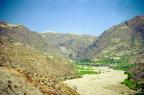
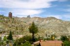

| En route... |
|
|
Vendredi 21 septembre -
Peut-être que de l'autre côté du globe ça commence à cailler, mais ici, c'est
aujourd'hui le printemps. Le soleil est là pour le souligner et même si le début
de la matinée était un peu frais, ça ne met pas longtemps à se réchauffer et
nous, on ne met pas longtemps à se retrouver en T-shirt.
Lire la suite ...
|
| Sucre |
|
|
Dimanche 23 septembre -
Il est 7h00 du mat' et on est déjà dehors en train d'attendre le bus. Encore.
Lire la suite ...
|
| Potosi |
|

|
Mecredi 26 septembre -
Par rapport à ses voisins, la Bolivie apparaît comme un petit pays. En fait,
il est tout de même grand comme deux fois la France!
Lire la suite ...
|
| Uyuni |
|
|
Samedi 29 septembre -
Ce matin, on part vers le sud, vers Uyuni. On part de 4000 mètres pour arriver
à 3700.
Lire la suite ...
|
| Les lagunes |
|
|
Lundi 1 octobre -
Après une bonne nuit dans notre joli dortoir où nos 6 lits sont bien alignés
et où Joël a bien toussé, on repart. Hier nous étions dans le désert de sel,
aujourd'hui, journée volcans!
Lire la suite ...
|
| Sud Lipez |
|
|
Mardi 2 octobre -
Lever 5H30. Ce matin, on voit les geysers.
Lire la suite ...
|
| Arrivée à La Paz |

|
Jeudi 4 octobre -
3H00 du mat', on quitte le lac Poopo qu'on n'a même pas vu -il faisait nuit
et on dormait- et on arrive à Oruro. La changement de bus.
Lire la suite ...
|
| Coroico |

|
Samedi 6 octobre -
On quitte déjà La Paz, mais seulement pour deux jours. Destination Coroico
et non Cocorico comme le pense Marion, à une centaine de kilomètres au nord.
Lire la suite ...
|
| Retour à La Paz |
|

|
Lundi 8 octobre -
Il est 10H30 et on a déjà pris en guise de petit déj quelques empanadas de
queso, de petits chausons fourrés au fromage, il en existe aussi au poulet ou
au boeuf. Pour le petit déj, nous on préfère ceux au fromage et surtout ceux
de la place Mendoza en dessous de notre hotel.
Lire la suite ...
|
| Tiahuanaco et Titicaca |
|
|
Mercredi 10 octobre -
C'est peut-être un hasard, mais quand même... depuis que Jéjé est là, ça n'arrête
pas...
Lire la suite ...
|
| Cochabamba |
|
|
Dimanche 14 octobre -
Trajet de La Paz à Cochabamba agrémenté d'un arrêt "almuerzo" (déjeuner) le
plus mauvais qu'on ait eu, d'une volée de grêlons et de superbes paysages. Arrivéee
animée à Cochabamba.
Lire la suite ...
|
| Vers l'Amazonie... |
|
|
Vendredi 19 octobre -
Pourtant on est au courant qu'il ne faut pas les croire. Mais là, on a relâché
notre attention.
Lire la suite ...
|
| Rurrenabaque |
|
|
Lundi 22 octobre -
Petit village amazonien blotti entre les colines recouvertes de forêts et le
Rio Béni, Rurrenabaque est plein de charme et d'exotisme pour nous avec ses
maisonnettes de bois ou de pisé au toit de paille, ses rues de terre battue
boueuses et ses habitants charmants. Partout des cocotiers et arbustes fleuris
de jaune, rouge, bleu, mauve.
Lire la suite ...
|
| Pirogue en Amazonie |
|
|
Mercredi 24 octobre -
A 6H00, on entend les poules et les cochons qui démarrent leur journée, puis
le seau du puits que quelqu'un remonte et qui résonne sur les parois de pierre.
Toilette au puits, petit déj de roi en famille.
Lire la suite ...
|
| Guaranamerin |
|
|
Vendredi 26 octobre -
On se lève tôt et on se dépêche, notre bus part à 7H30. Direction la frontière
brésilienne.
Lire la suite ...
|